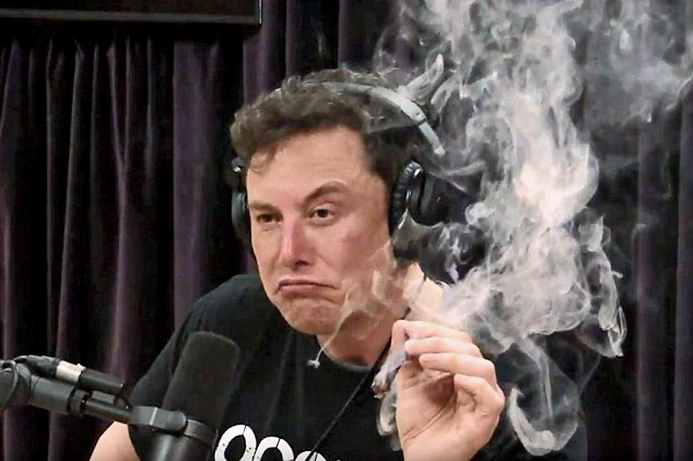

Elon Reeve Musk FRS ( born June 28, 1971) is a technology entrepreneur, investor, and engineer. He holds South African, Canadian, and U.S. citizenship and is the founder, CEO, and chief engineer/designer of SpaceX; co-founder, CEO, and product architect of Tesla, Inc.; co-founder of Neuralink; founder of The Boring Company; co-founder and initial co-chairman of OpenAI; and co-founder of PayPal. In December 2016, he was ranked 21st on the Forbes list of The World's Most Powerful People, and was ranked (co-)first on the Forbes list of the Most Innovative Leaders of 2019. He has a net worth of $22.8 billion and is listed by Forbes as the 40th-richest person in the world.
Born and raised in Pretoria, South Africa, Musk moved to Canada when he was 17 to attend Queen's University. He transferred to the University of Pennsylvania two years later, where he received a Bachelor's degree in economics from the Wharton School and a Bachelor's degree in physics from the College of Arts and Sciences. He began a Ph.D. in applied physics and material sciences at Stanford University in 1995 but dropped out after two days to pursue an entrepreneurial career. He subsequently co-founded Zip2 with his brother Kimbal, a web software company, which was acquired by Compaq for $340 million in 1999. Musk then founded X.com, an online bank. It merged with Confinity in 2000 and later that year became PayPal, which was bought by eBay for $1.5 billion in October 2002.
In May 2002, Musk founded SpaceX, an aerospace manufacturer and space transport services company, of which he is CEO and lead designer. He joined Tesla, Inc., an electric vehicle manufacturer, in 2004, the year after it was founded, and became its CEO and product architect. In 2006, he inspired the creation of SolarCity, a solar energy services company (now a subsidiary of Tesla) and operated as its chairman. In 2015, Musk co-founded OpenAI, a nonprofit research company that aims to promote friendly artificial intelligence. In July 2016, he co-founded Neuralink, a neurotechnology company focused on developing brain–computer interfaces. In December 2016, Musk founded The Boring Company, an infrastructure and tunnel-construction company.
In addition to his primary business pursuits, Musk has envisioned a high-speed transportation system known as the Hyperloop, and has proposed a vertical take-off and landing supersonic jet electric aircraft with electric fan propulsion, known as the Musk electric jet. Musk has stated that the goals of SpaceX, Tesla, and SolarCity revolve around his vision to change the world and humanity. His goals include reducing global warming through sustainable energy production and consumption, and reducing the risk of human extinction by establishing a human colony on Mars.